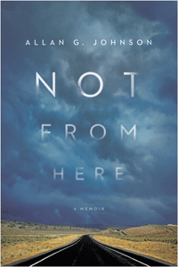

<body bgcolor="#FFFFFF" text="#000000" link="#0000FF" vlink="#CC0000" alink="#CC0000"><center><hr width="350" size="1" align="center" noshade>A profound and disturbing exploration of the meaning of place, lineage, and belonging, and what it means to be American<hr width="350" size="1" align="center" noshade><p><a href="https://cdcshoppingcart.uchicago.edu/Cart/ChicagoBook.aspx?ISBN=9781439912454&&PRESS=temple" target="_top">Buy this book!</a> | <a href="https://cdcshoppingcart.uchicago.edu/Cart/Cart.aspx?PRESS=temple" target="_top">View Cart</a> | <a href="https://cdcshoppingcart.uchicago.edu/Cart/Cart.aspx?PRESS=temple" target="_top">Check Out</a></p><p></p></center><!--none//--><h1>Not from Here</h1>
<H2>A Memoir</H2>
<h3>Allan G. Johnson</h3>
<P>cloth 1-4399-1245-9 $24.50, May 15, <FONT COLOR=#990033>Available</FONT>
<br>Electronic Book 1-4399-1247-5 $24.50 <FONT COLOR=#990033>Available</FONT>
<BR> 186 pp
5.5x8.25
1&nbsp;map(s)
</P><BLOCKQUOTE><I>"What it means to be white, what it means to be American, and what it means to be from a place and to belong to it are questions that Johnson raises throughout the book. He is painfully aware that as a descendant of those who took the land from others, dispossessing and displacing them, he is today the beneficiary of acts he did not perform. . . . [T]hose expecting a son's gentle memoir will be in for a surprise."</i><br>&#151<b><i>Kirkus Reviews</b></i></I></BLOCKQUOTE>
<P>When Allan Johnson asked his dying father where he wanted his ashes to be placed, his father replied—without hesitation—that it made no difference to him at all. In his poignant, powerful memoir, <i>Not from Here</i>, Johnson embarks on an extraordinary two-thousand-mile journey across the Upper Midwest and Great Plains to find the place where his father’s ashes belong.
<P>As a white man of Norwegian and English lineage, Johnson explores both America and the question of belonging to a place whose history holds the continuing legacy of the displacement, dispossession, and genocide of Native Peoples.
<P>More than a personal narrative, <i>Not from Here</i> illuminates not only the national silence around unresolved questions of accountability, race, and identity politics but also the dilemma of how to take responsibility for a past we did not create. Johnson’s story—of the past living in the present; of redemption, fate, family, tribe, and nation; of love and grief—raises profound questions about belonging, identity, and place.
<BR>&nbsp;<h2>Excerpt</h2><P>Excerpt available at <a href="http://www.temple.edu/tempress">www.temple.edu/tempress</a></p>
<BR>&nbsp;<h2>Reviews</h2>
<p><i>"</i>Not from Here<i> is a fascinating journey into filiality, heritage, and the heart of this American land. It is a journey worth taking and a story well told."</i> <br>&#151<b>Kent Nerburn</b>, author of <i>Letters to My Son</i>, <i>Neither Wolf nor Dog</i>, and <i>Chief Joseph and the Flight of the Nez Perce</i>
<p><i>"The extraordinary achievement of </i>Not from Here<i>, and the stunning gift it offers to my own self-understanding, lies in the mirror it holds to white American culture. Seeking a resting place for his father’s ashes, the son is gradually faced with the essential rootlessness of his—and my own—people. In the process of conquering and commodifying our world, we have been losing what it means to belong."</i> <br>&#151<b>Joanna Macy</b>, author of <i>Coming Back to Life</i>
<p><i>"If those two great existential questions—Who am I? and Where am I from?—are linked, how are those with transient upbringings in our amnesiatic, immigrant-settled society to answer them? In </i>Not from Here<i>, Allan Johnson takes a road trip on the American plains to try to find out, haunted by his globe-trotting father's ashes in the trunk and the legacy of Euro-American conquest staring at him through the windshield."</i> <br>&#151<b>Colin Woodard</b>, author of <i>American Nations and The Lobster Coast</i>
<p><i>"</i>‘This package contains the cremated body of / Valdemar N. L. Johnson / Cremated December 7, 2005, ID Number 20051912.’<i> A nondescript package of gray ash triggers a passionate engagement with American history as the author's need to find a meaningful place for his father’s remains becomes a poignant quest for his own identity: the ancestral identity that originates in majestic Norwegian fjords and flees, improbably, to the rich wind-blown alluvium of America's heartland—a Promised Land being ruthlessly cleansed of Native American tribes to make way for sturdy Lutherans and a nation’s dream of Manifest Destiny. Johnson comes to terms with the ricocheting ironies in a tender, wistful narrative reminiscent of N. Scott Momaday’s classic journey of tribal ancestral discovery in </i>The Way to Rainy Mountain</i>. </i>Not from Here<i> is a truly lovely book."</i> <br>&#151<b>Calvin Luther Martin</b>, author of <i>The Way of the Human Being</i>
<p><i>"[A] deeply personal journey.... </i>Not from Here<i> is part diary, part genealogy, part political philosophy, and partly an essay on our national conscience.... Johnson's style is reflective and pleasurable.”</i>
<br>&#151<b><i>The Pierce Progressive</i></b>
<p><i>"Ostensibly, sociologist Johnson sets out here to describe his quest to find a place to spread his late father’s ashes. The book, though, describes more than one journey.... The author’s grief is palpable, and by the end of the book readers will understand both less and more about their own place in the world and the workings of racism, lies, and brutality in our country’s past and present. VERDICT Those undergoing their own grief journey will find their thoughts given poignant expression in Johnson’s musings on his father’s life and their too-distant relationship. The best part of this book, though, and why it should be widely read, is its thoughtful and examination of the workings of privilege in immigrant experiences."</i>
<br>&#151<b><i>Library Journal</i></b>
<p><i>"This is a well crafted and extremely thoughtful memoir. Johnson doesn’t shy away from the hard aspects of being identified as white (i.e. the complicated feelings about immigrants who made a life on land that was cleared for them) but doesn’t rely solely on the white man’s burden. He is, throughout the memoir, clearly making strange decisions through grief and the writing meanders and goes off into tangents but his main struggle is a relatable one--how can we truly understand another human being, history? His search for a place to place his father is his attempt at this and along the way, he learns more about himself. Johnson writes well and emotionally while refusing to accept simple explanations or reasons for anything. He is always examining concepts and feelings from multiple angles--fully embracing the complexity of lived experience and the ways that the dead and the living are interconnected."</i>
<br>&#151<b><i>Reading Like I'm Feasting</i></b>
<p><i>"In this very moving narrative, Johnson explores what it means to be a descendant of those early pioneers who took land from the indigenous people who had been living there for generations.... Johnson takes the box containing his father’s ashes on a road trip where he meets family members for the first time, learning more about his family’s past than he ever learned from his father... It’s a spiritual look at our connections to our pasts, and our responsibilities to future generations." </i>
<br>&#151<b><i>Friends Journal</i></b>
<BR>&nbsp;<H2>About the Author(s)</H2>
<P><b>Allan G. Johnson</b> is a nationally recognized sociologist, nonfiction author, novelist, and public speaker best known for his work on issues of privilege and oppression, especially in relation to gender and race. He is the author of numerous books, including <i><a href="1780A_reg.html" target="_top">The Gender Knot: Unraveling Our Patriarchal Legacy</a></i> , and <i><a href="1366B_reg.html" target="_top">The Forest and the Trees: Sociology as Life, Practice, and Promise</a></i> (both Temple) and <i>Privilege, Power, and Difference</i>. His work has been translated into several languages and excerpted in numerous anthologies. Visit him online at <a href="http://www.agjohnson.us" target="new">www.agjohnson.us</a> and follow his blog at <a href="http://agjohnson.wordpress.com" target="new">http://agjohnson.wordpress.com</a>.</P>
<BR><H2>Subject Categories</H2>
<p><A HREF="/tempress/biography.html" TARGET="_top">Biography/Memoir/Autobiography</a>
<BR><A HREF="/tempress/sociology.html" TARGET="_top">Sociology</a>
<BR><A HREF="/tempress/race.html" TARGET="_top">Race and Ethnicity</a>
</p>
<p align="center"><a href="https://cdcshoppingcart.uchicago.edu/Cart/ChicagoBook.aspx?ISBN=9781439912454&&PRESS=temple" target="_top">Buy this book!</a> | <a href="https://cdcshoppingcart.uchicago.edu/Cart/Cart.aspx?PRESS=temple" target="_top">View Cart</a> | <a href="https://cdcshoppingcart.uchicago.edu/Cart/Cart.aspx?PRESS=temple" target="_top">Check Out</a></p><p><font face="Arial" size="1"><a href="copyright.html" onMouseOver="window.status='Web Copyright Policy';return true;" onMouseOut="window.status=''" title="Web Copyright Policy">&copy;</a> 2017 <a href="http://www.temple.edu" target="new" onMouseOver="window.status='Link to Temple University home page';return true;" onMouseOut="window.status=''" title="Link to Temple University home page">Temple University</a>. All Rights Reserved. http://www.temple.edu/tempress/titles/2362_reg.html</font></p>